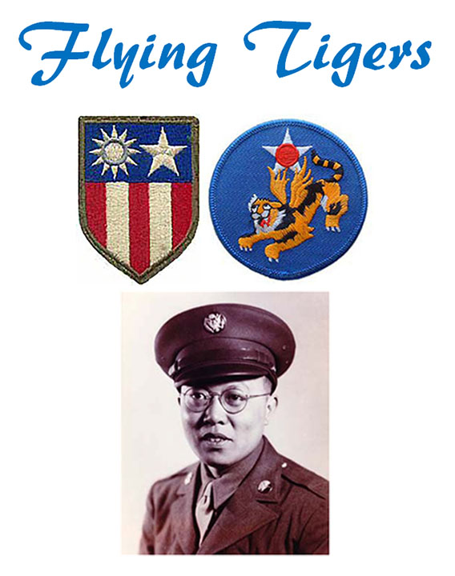

Home | Insignia | P40 | Jacket | Chit | Burma Road
The 1st American Volunteer Group (AVG) of the Chinese Air Force in 1941–1942, nicknamed the Flying Tigers, was composed of pilots from the United States Army Air Corps (USAAC), Navy (USN), and Marine Corps (USMC), recruited under presidential authority and commanded by Claire Lee Chennault.
F.S. was a member of the 14th Air Force (successor of the Flying Tigers), but continued to be called the Flying Tigers. Athough F.S. had his own pilot's license he was not allowed to fly in the Air Force because be wore glasses.
See more at https://en.wikipedia.org/wiki/Fourteenth_Air_Force#1st_American_Volunteer_group.